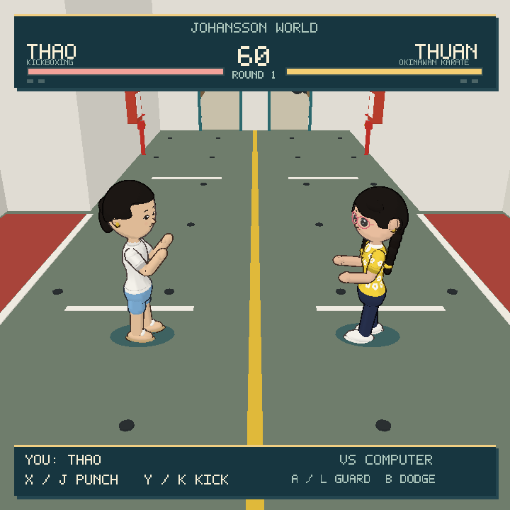

Johansson World · Native game demo
Ferry Deck Fighters
Thao and Thuan spar on the Minato Maru car deck, with the characters and ferry from Johansson World.
Thao uses kickboxing; Thuan has a karate-inspired style. Play against the computer or practise in training mode.
Prototype · 17 October 2026
Download Linux demo · 848 KiB
Steam Deck & x86-64 Linux
Copy, paste and install
On Steam Deck, switch to Desktop Mode and open Konsole. Copy this command and paste it into the terminal:
curl -fsSL https://nj22az.github.io/ferry-deck-fighters/install.sh -o /tmp/ferry-demo.sh &&
sh /tmp/ferry-demo.shThe installer checks the download’s SHA-256 checksum, installs in your user account and adds an application entry. No compilation, administrator password or SteamOS system changes are required.
Add it to Steam
- In Desktop Mode, open Steam and choose Add a Game → Add a Non-Steam Game.
- Select Ferry Deck Fighters. If it is not listed, choose Browse and select
Launch-Ferry-Deck-Fighters.shinside the installation folder printed by the installer. - Leave forced Proton compatibility disabled. Select a Gamepad controller layout.
- Return to Gaming Mode and launch. The square playfield has borders on the Deck’s widescreen display.
The default installation folder is ~/.local/share/ferry-deck-fighters/demo-2026.10.17.1/.
Which version should I use?
| Platform | Current support |
|---|---|
| Steam Deck | Use the installer above. Native x86-64 Linux build; physical Steam Deck acceptance is pending. |
| Linux PC | Same installer or portable download. Requires x86-64 Linux, glibc 2.17+, SDL2, zlib and GLES2 drivers. |
| RG CubeXX | The ARM64 build exists. An easy-install package still needs to match your firmware: stock Anbernic, muOS or KNULLI. Do not use this x86-64 installer. |
| Mac | No macOS download yet. A separate Mac executable and platform adaptation are required; the Linux builds will not run on macOS. |
Controls
- Stick / D-pad: move and sidestep
- X: punch; repeat after contact for a follow-up
- Y: kick · Hold A: guard · B + direction: dodge
- Start: start, pause or continue · Select: pause / title
- L1: change fighter · R1: toggle training
Use these shoulder shortcuts on the title or pause screen.
If it does not start
Open ~/.local/state/ferry-deck-fighters/latest.log to see the startup error. Custom XDG data or state folders are respected.
The download includes a portable launcher, game assets and instructions. It does not install missing system libraries.
Installer and native launch checks pass on Linux. Sustained handheld performance and device-specific controls remain to be verified.
Source code and development notes on GitHub · Download checksum